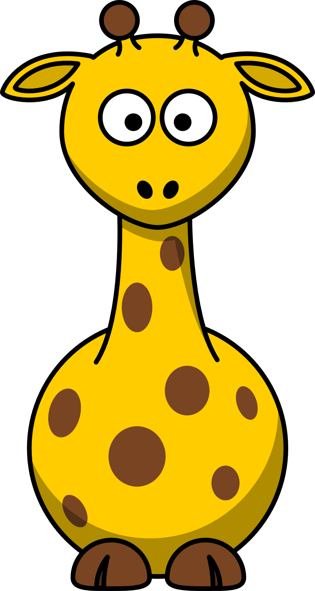

About Me (Ryan Huhn)
Hello, my name is Ryan Huhn and I am 14 years old. To start I am very out going and like to make
lots of friends. I play soccer for the soccer club known as Plymouth Reign. I am a freshman at Divine Child
High School. I am in three Honors classes and I take school very seriously.
I have one sister her name is Camryn but people call her Cami. My favorite holiday is Christmas
and my favorite food is my Grandmas homade spagetti. My dream collage is Notre Dame because my dad's side of the family loves
Notre Dame and I have grown up rooting for them. I would love to play soccer in college even if it is just for
the club team. My second dream collage would be Michigan in Ann Arbor because that is where my mom went and I
want to be a part of a sorority especially Sigma Kapa, that is the sorority that my mom was president of. I am very out going and like to make lots of friends.
My Top
Favorite Sports

I love to play sports and be active.
| Soccer |
lacrosse |
Volleyball |
Crosscountry |
Golf |
| I play soccer it is so mch fun and I take it very seriously I play for the club of Plmouth Reign. |
I don't play Lacrosse right now but I played it last year and it was so fun and I got very good at it. |
I love to play volleyball wth my friends and play bum, set, spike with my sister. |
I love to run in my neighborhood while listening to music. |
I love to play golf with my dad on a warm summer day. |
Favorite Animals

I love many differrent types of animals.
| Giraffe |
Bunny |
Dog |
Fish |
Otter |
| Giraffes are so unigue looking and I love their spotted fur and long purple tongues. |
My bunnys name is Teddy and I especially love holland lop bunnys because of thier floppy ears and how soft they are. |
Dogs are so playful and will alwyas be willng to fetch a toy or cuddle on the couch with you. |
I love fish becase I have a fish named Gibbs, he is red and so beatiful. |
I love otters because they are so cute especially when the baby otters lay on their mothers stomachs when they sleep. |
Favorite Subjects

I love to go to school to learn about all different things.
| History |
Theology |
Biology |
English |
Math |
| I love learning about what has happened in the past and I love to learn how the world has come to be. |
I love to learn about my faith and how to reflect my faith in ever part of my life. |
I love to learn about life and what happens in our bodies esppecially genes because I get to figure out how I got my bright blue eyes. |
Reading is something I like to do in my free time especially when I find a good book. Then I like to tell my parents all about it. |
I love math because I get to learn how to solve very hard problems and I love the jokes that Mr.Murphey tells us. |